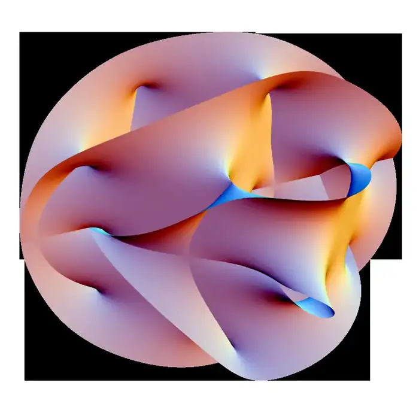

The experiments
Torsion balances, atom interferometers and microcantilevers now test gravity at short distances and small masses, looking for deviations from Newton's law that would indicate new physics. Results have constrained several proposals, including large extra dimensions.
Maps, diagrams and images


The status
No confirmed deviation has been found, and the bounds have tightened. The field's interest is that it tests gravity where quantum effects might appear, and the experiments are documented in the literature.
Documented: the experiments and bounds.
Not found: any deviation.
Tightened: the constraints.
Ongoing: the programme.
The honest label: live debate.
Why it is in the archive
Because it is gravity being tested on a bench, which is new.
Open resources on this topic
- PapersOpen-access articles: DOAJ · PubMed Central · Internet Archive Scholar
- BooksPublic-domain and borrowable copies: Open Library · Project Gutenberg · Google Books · Internet Archive
Cite this page
Momin, S. (2026). Gravity in Tabletop Experiments. The Larger World Archive. https://drsamonline.github.io/LARGE_GLOBE/gravity-tabletop.htmlMomin, Sohil. “Gravity in Tabletop Experiments.” The Larger World Archive, 2026, https://drsamonline.github.io/LARGE_GLOBE/gravity-tabletop.html.Momin, Sohil. “Gravity in Tabletop Experiments.” The Larger World Archive, 2026. https://drsamonline.github.io/LARGE_GLOBE/gravity-tabletop.html.@misc{gravity2026gravity,
author = {Momin, Sohil},
title = {Gravity in Tabletop Experiments},
year = {2026},
howpublished = {The Larger World Archive},
url = {https://drsamonline.github.io/LARGE_GLOBE/gravity-tabletop.html},
note = {Last reviewed 20 November 2026}
}Last reviewed 20 November 2026 · Corrections policy · this page is not peer reviewed
What a tabletop experiment can test
Quantum gravity effects are expected at the Planck scale, which is far beyond any laboratory. A tabletop experiment cannot reach that scale, so what it can do is test a proposed low-energy consequence — a deviation from Newtonian gravity at short range, or an entanglement signature a theory predicts.
That is a real contribution and a narrow one. The archive keeps the page because 'tabletop quantum gravity' sounds like the effect has been measured, and what has been measured, at best, is one predicted shadow of it.
Sources for this page
- Wikipedia, “Torsion spring” — the instrumenten.wikipedia.org
- Wikipedia, “Atom interferometer” — the methoden.wikipedia.org
- Wikipedia, “Inverse-square law” — the targeten.wikipedia.org
- Wikipedia, “Tests of general relativity” — the fielden.wikipedia.org
- Archive.org — Bekenstein, Can quantum gravity be exposed in the laboratory? A table-top experiment (2013)archive.org/details/arxiv-1301.4322